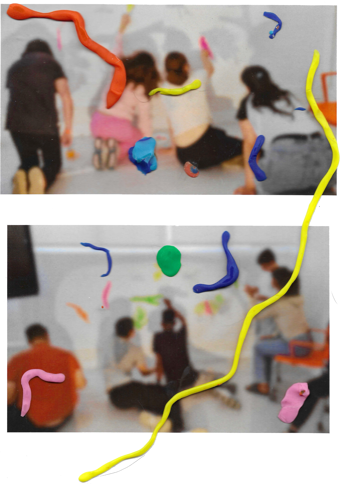

Nuestros talleres parten de la creación de instalaciones artísticas participativas, que nos permiten generar paisajes transformables que invitan a jugar, construir ficciones y habitar el espacio desde la experimentación.
En estas propuestas, las personas participantes se adentran en atmósferas construidas a partir del color, la luz, las sombras y otros materiales como telas, que activan una experiencia sensorial y estética. El espacio se plantea como un entorno abierto en el que explorar, desplazarse, observar y manipular, permitiendo que cada cuerpo encuentre su propia forma de relación con lo que sucede.

Durante el desarrollo de los talleres, los elementos se transforman y se reconfiguran colectivamente, de manera que quienes participan no solo recorren el paisaje, sino que también intervienen en él, convirtiéndose en agentes activos de su construcción.
Partimos de la convicción de que las prácticas artísticas, vinculadas a la experiencia personal y a la creación de ficciones, posibilitan la creación de imágenes y relatos capaces de dar forma a aquello que nos atraviesa en nuestro día a día. En este sentido, los talleres se plantean como espacios de mediación en los que la experimentación y la creación compartida abren lugar a la reflexión, tomando como referencia prácticas y lenguajes del arte contemporáneo.
Concretamente, hemos profundizado en el trabajo con las instalaciones artísticas como recurso educativo gracias al desarrollo de las dos ediciones del proyecto El clima en la cuerda floja: imaginando futuros extremos (2023-2026), financiado por la Fundación Española para la Ciencia y la Tecnología (FECYT) en su convocatoria de Ayudas para el fomento de la cultura científica, tecnológica y de la innovación. En colaboración con un equipo científico, este proyecto propone el desarrollo de talleres en centros educativos para mejorar la comprensión y asimilación del cambio climático.